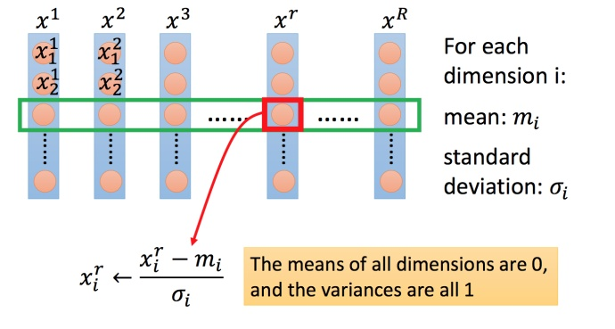

复习 | 梯度下降法
在回归问题的第三步中，需要解决下面的最优化问题：
$$
\theta^* = \arg \min_\theta L(\theta)
$$
- $L$ ：lossfunction（损失函数）
- $\theta$ ：parameters（参数）
这里的 $\theta$ 指代一堆参数，比如上篇说到的 $w$ 和 $b$ 。
我们要找一组参数 $\theta$ ，让损失函数越小越好，这个问题可以用梯度下降法解决：
假设 $\theta$ 有里面有两个参数 $\theta_1, \theta_2$，随机选取初始值
- 随机地选择一个起始的$\theta$
$$
\theta^0 = \left[
\begin{matrix}
\theta_1^0 \\
\theta_2^0
\end{matrix}
\right]
$$
- 计算下一个点的坐标
$$
\left[
\begin{matrix}
\theta_1^1 \\
\theta_2^1
\end{matrix}
\right] = \left[
\begin{matrix}
\theta_1^0 \\
\theta_2^0
\end{matrix}
\right] - \eta \left[
\begin{matrix}
\frac{\partial L(\theta_1^0)}{\partial \theta_1} \\
\frac{\partial L(\theta_2^0)}{\partial \theta_2}
\end{matrix}
\right]
$$
- 反复进行.
梯度表示为
$$
\nabla L(\theta) = \left[
\begin{matrix}
\frac{\partial C(\theta_1)}{\partial \theta_1} \\
\frac{\partial C(\theta_2)}{\partial \theta_2}
\end{matrix}
\right]
$$
那么点的更新过程就可以写成：
$$
\theta^1 = \theta^0 - \eta \nabla L(\theta^0)
$$
$$
\theta^2 = \theta^1 - \eta \nabla L(\theta^1)
$$
下图举例将梯度下降法的计算过程进行可视化。

提示一 | 小心调整步长
举例：

上图左边黑色为损失函数的曲线，假设从左边最高点开始，如果学习率调整的刚刚好，比如红色的线，就能顺利找到最低点。
- 如果学习率调整的太小，比如蓝色的线，就会走的太慢，虽然这种情况给足够多的时间也可以找到最低点，实际情况可能会等不及出结果。
- 如果学习率调整的有点大，比如绿色的线，就会在上面震荡，走不下去，永远无法到达最低点。
- 还有可能非常大，比如黄色的线，直接就飞出去了，更新参数的时候只会发现损失函数越更新越大。
虽然这样的可视化可以很直观观察，但可视化也只是能在参数是一维或者二维的时候进行，更高维的情况已经无法可视化了。
解决方法就是上图右边的方案，将参数改变对损失函数的影响进行可视化。
- 比如学习率太小（蓝色的线），损失函数下降的非常慢；
- 学习率太大（绿色的线），损失函数下降很快，但马上就卡住不下降了；
- 学习率特别大（黄色的线），损失函数就飞出去了；
- 红色的就是差不多刚好，可以得到一个好的结果。
自适应学习率
- 一种常用的做法：每隔几次迭代就减小步长.
- 最开始的时候，我们距离最优点很远，所以我们可以使用很大的步长.
- 经过若干次迭代后，我们距离最优点很近了，所以我们要减小步长.
- 例如：$\frac{1}{t}$衰减，$\eta^t = \frac{\eta}{\sqrt{t+1}}$，其中$t$代表迭代次数.
- 步长的选择是不可能一劳永逸的.
- 最好的做法是，每个参数选择不同的步长.
Adagrad 算法
Adagrad 是什么
将每一个参数的步长都除以它之前导数的均方根。
普通的批次梯度下降（Vanilla Gradient descent）的做法：
$$
w^{t+1} \leftarrow w^t -η^tg^t
$$
$$
\eta^t =\frac{\eta^t}{\sqrt{t+1}}
$$
Adagrad可以做的更好：
$$
w^{t+1} \leftarrow w^t -\frac{η^t}{\sigma^t}g^t
$$
$$
g^t =\frac{\partial L(\theta^t)}{\partial w}
$$
- $w$：是其中一个参数，因为改进的算法要针对每个参数选择不同的步长.
- $\sigma^t$：参数$w$的前一个导数的均方根.
- $\eta^t = \frac{\eta}{\sqrt{t+1}}$.
- $g^t = \frac{\partial C(\theta^t)}{\partial w}$.
这样以来，每次参数的更新都是依赖于每个参数的不同梯度。
Adagrad举例
下面是一个参数的更新过程
$$
w^1 \leftarrow w^0 - \frac{\eta^0}{\sigma^0} g^0 , \sigma^0 = \sqrt{(g^0)^2}
$$
$$
w^2 \leftarrow w^1 - \frac{\eta^1}{\sigma^1} g^1 , \sigma^1 = \sqrt{\frac{1}{2}[(g^0)^2+(g^1)^2]}
$$
$$
w^3 \leftarrow w^2 - \frac{\eta^2}{\sigma^2} g^2 , \sigma^2 = \sqrt{\frac{1}{3}[(g^0)^2+(g^1)^2+(g^2)^2]}
$$
$$
\dots \dots
$$
$$
w^{t+1} \leftarrow w^t - \frac{\eta^t}{\sigma^t} g^t , \sigma^t = \sqrt{\frac{1}{t+1} \sum_{i=0}^{t}(g^i)^2}
$$
将$\eta^t$和$\sigma^t$的表达式代入到式中，上下同时消去$\frac{1}{\sqrt{t+1}}$得：
$$
w^{t+1} \leftarrow w^t - \frac{\eta}{\sqrt{\sum_{i=0}^{t}(g^i)^2}} g^t
$$
Adagrad存在的矛盾
在 Adagrad中，当梯度越大的时候，步伐应该越大，但下面分母又导致当梯度越大的时候，步伐会越小。
下图是一个直观的解释：
$g^4$的反差特别小。
分母$\sqrt{\sum_{i=0}^{t}(g^i)^2}$就表示了造成反差的效果。
下面给一个正式的解释：
比如初始点在 $x_0$，最低点为 $−\frac{b}{2a}$，最佳的步伐就是 $x0$ 到最低点之间的距离 $\left | x_0+\frac{b}{2a} \right |$，也可以写成 $\left | \frac{2ax_0+b}{2a} \right |$。而刚好 $|2ax_0+b|$ 就是方程绝对值在 $x_0$ 这一点的微分。
这样可以认为如果算出来的微分越大，则距离最低点越远。而且最好的步伐和微分的大小成正比。所以如果踏出去的步伐和微分成正比，它可能是比较好的。
结论：梯度越大，就跟最低点的距离越远。
这个结论在多个参数的时候就不一定成立了。
多参数下结论不一定成立
对比不同的参数
上图左边是两个参数的损失函数，颜色代表损失函数的值。如果只考虑参数 $w_1$，就像图中蓝色的线，得到右边上图结果；如果只考虑参数 $w_2$，就像图中绿色的线，得到右边下图的结果。确实对于 $a$ 和 $b$，结论1-1是成立的，同理 $c$ 和 $b$ 也成立。但是如果对比$a$ 和 $c$，就不成立了，$c$ 比 $a$ 大，但 $c$ 距离最低点是比较近的。
所以上面的结论是在没有考虑跨参数对比的情况下，才能成立的。所以还不完善。
之前说到的最佳距离 $\left | \frac{2ax_0+b}{2a} \right |$，还有个分母 $2a$ 。对function进行二次微分刚好可以得到：
$$
\frac{\partial ^2y}{\partial x^2} = 2a
$$
所以最好的步伐应该是：
$$
\frac{一次微分}{二次微分}
$$
即不止和一次微分成正比，还和二次微分成反比。最好的step应该考虑到二次微分：

Adagrad进一步的解释
再回到之前的 Adagrad
对于 $\sqrt{\sum_{i=0}^t(g^i)^2}$ 就是希望再尽可能不增加过多运算的情况下模拟二次微分。（如果计算二次微分，在实际情况中可能会增加很多的时间消耗）
提示二 | 随机梯度下降法
原来的梯度下降方法：
- 损失函数的计算：
$$
L = \sum_{n} \left(\hat{y}^n - \left(b + \sum w_i x_i^n\right)\right)^2
$$
- 点的更新：
$$
\theta^i = \theta^{i-1} - \eta \nabla L(\theta^{i-1})
$$
而随机梯度下降法（Stochastic Gradient Descent）：
- 选择一个样本$x^n$.
- 只计算选择的样本$x^n$的损失函数：
$$
L^n = \left( \hat{y}^n - \left( b + \sum w_i x_i^n \right) \right)^2
$$
- 根据样本$x^n$的损失函数来更新点：
$$
\theta^i = \theta^{i-1} - \eta \nabla L^n(\theta^{i-1})
$$
这样，在原来的梯度下降法看了全部样本之前，就可以看一个样本走一步，最后得到解.
对比：

常规梯度下降法走一步要处理到所有二十个例子，但随机算法此时已经走了二十步（每处理一个例子就更新）
提示三 | 特征缩放
比如有个函数：
$$
y = b + w_1 x_1 + w_2 x_2
$$
当中，$x_1$和$x_2$的尺度不同，那么就要进行特征放缩，让特征拥有相同的尺度。

为什么要这样做

上图左边是 $x_1$ 的scale比 $x_2$ 要小很多，所以当 $w_1$ 和 $w_2$ 做同样的变化时，$w_1$ 对 $y$ 的变化影响是比较小的，$x_2$ 对 $y$ 的变化影响是比较大的。
坐标系中是两个参数的error surface（现在考虑左边蓝色），因为 $w_1$ 对 $y$ 的变化影响比较小，所以 $w_1$ 对损失函数的影响比较小，$w_1$ 对损失函数有比较小的微分，所以 $w_1$ 方向上是比较平滑的。同理 $x_2$ 对 $y$ 的影响比较大，所以 $x_2$ 对损失函数的影响比较大，所以在 $x_2$ 方向有比较尖的峡谷。
上图右边是两个参数scaling比较接近，右边的绿色图就比较接近圆形。
对于左边的情况，上面讲过这种狭长的情形不过不用Adagrad的话是比较难处理的，两个方向上需要不同的学习率，同一组学习率会搞不定它。而右边情形更新参数就会变得比较容易。左边的梯度下降并不是向着最低点方向走的，而是顺着等高线切线法线方向走的。但绿色就可以向着圆心（最低点）走，这样做参数更新也是比较有效率。
怎么做缩放
方法非常多，这里举例一种常见的做法：

对于每一个维度$i$的特征，计算：
- 均值：
$$
m_i = \frac{1}{R} \sum^{R}_{j=1} x_i^j
$$
- 标准差：
$$
\sigma_i = \frac{1}{R}\sum_{j=1}^{R} \left( x_i^j - m_i \right)^2
$$
- 计算尺度变换后的特征：
$$
x_i^r = \dfrac{x_i^r - m_i}{\sigma_i}
$$
这样得到的新的特征均值为0，方差为1.
梯度下降的理论基础
问题
当用梯度下降解决问题：
$$
\theta^∗= \underset{ \theta }{\operatorname{arg\ max}} L(\theta)
$$
每次更新参数 $\theta$，都得到一个新的 $\theta$，它都使得损失函数更小。即：
$$
L(\theta^0) >L(\theta^1)>L(\theta^2)>\dots
$$
上述结论正确吗？
结论是不正确的。
数学理论
比如在 $\theta^0$ 处，可以在一个小范围的圆圈内找到损失函数细小的 $\theta^1$，不断的这样去寻找。
接下来就是如果在小圆圈内快速的找到最小值？
泰勒展开式
先介绍一下泰勒展开式
定义
若 $h(x)$ 在 $x=x_0$ 点的某个领域内有无限阶导数（即无限可微分，infinitely differentiable），那么在此领域内有：
$$
\begin{aligned}
h(x) &= \sum_{k=0}^{\infty }\frac{h^k(x_0)}{k!}(x-x_0)^k \
& =h(x_0)+{h}’(x_0)(x−x_0)+\frac{h’’(x_0)}{2!}(x−x_0)^2+⋯
\end{aligned}
$$
当 $x$ 很接近 $x_0$ 时，有 $h(x)≈h(x_0)+{h}’(x_0)(x−x_0)$，式就是函数 $h(x)$ 在 $x=x_0$ 点附近关于 $x$ 的幂函数展开式，也叫泰勒展开式。
举例：
图中3条蓝色线是把前3项作图，橙色线是 $sin(x)$。
多变量泰勒展开式
下面是两个变量的泰勒展开式
利用泰勒展开式简化
回到之前如何快速在圆圈内找到最小值。基于泰勒展开式，在 $(a,b)$ 点的红色圆圈范围内，可以将损失函数用泰勒展开式进行简化：
将问题进而简化为下图：
不考虑s的话，可以看出剩下的部分就是两个向量$(\triangle \theta_1,\triangle \theta_2)$ 和 $(u,v)$ 的内积，那怎样让它最小，就是和向量 $(u,v)$ 方向相反的向量
然后将u和v带入。
$$
L(\theta)\approx s+u(\theta_1 - a)+v(\theta_2 - b)
$$
发现最后的式子就是梯度下降的式子。但这里用这种方法找到这个式子有个前提，泰勒展开式给的损失函数的估算值是要足够精确的，而这需要红色的圈圈足够小（也就是学习率足够小）来保证。所以理论上每次更新参数都想要损失函数减小的话，即保证式1-2 成立的话，就需要学习率足够足够小才可以。
所以实际中，当更新参数的时候，如果学习率没有设好，是有可能式1-2是不成立的，所以导致做梯度下降的时候，损失函数没有越来越小。
式1-2只考虑了泰勒展开式的一次项，如果考虑到二次项（比如牛顿法），在实际中不是特别好，会涉及到二次微分等，多很多的运算，性价比不好。
梯度下降的限制

- 容易陷入局部极值；
- 还有可能卡在不是极值，但微分值是0的地方；
- 还有可能实际中只是当微分值小于某一个数值就停下来了，但这里只是比较平缓，并不是极值点。
示例
AOE中的示例
- 利用帝国时代的方式模拟梯度下降；
- 在地图上大多数位置我们是未知的，只有我们单位走过的地方是可知；
- 地图上的海拔可以看作损失函数loss function，我们的目的就是寻找海拔的最低点的值；
- 随机初始一个位置，朝向较低的方向移动，周而复始，直到local minimal(在不开天眼的情况下，你始终不会知晓所在位置是否为global minimal)。
Minecraft中的示例
- 利用梯度下降法更新参数，损失函数loss function可能会不降反升(利用Mincraft解释该情况)；
- 人物的前方是较低方向，右方也是较低方向，利用梯度下降法，往右前方移动一步，然后反复用梯度下降法，往右前方移动一步，周而复始；
- 尽管前方和右方是下降的方向，但往右前方移动，将会失败(因为实际右前方是比较高的地方)。